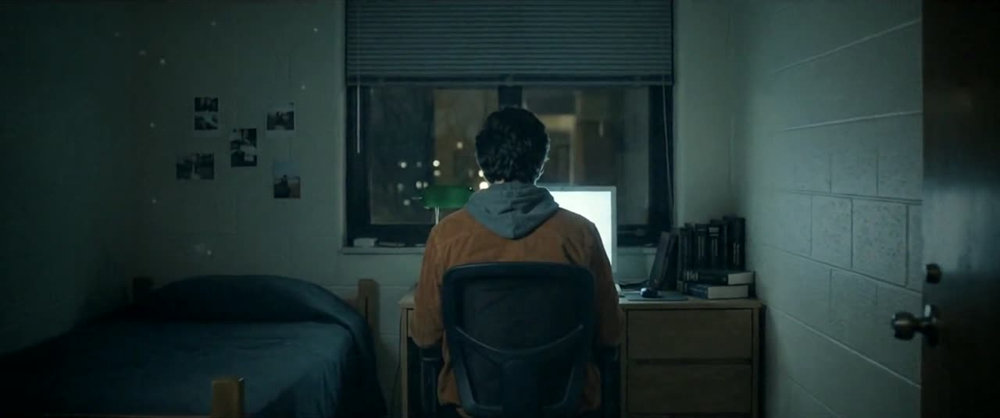
Cold open0:00
The dream.
3:12 AM. The door slowly opens on a figure at the desk. He looks back. It is Eli. Hard cut to black.
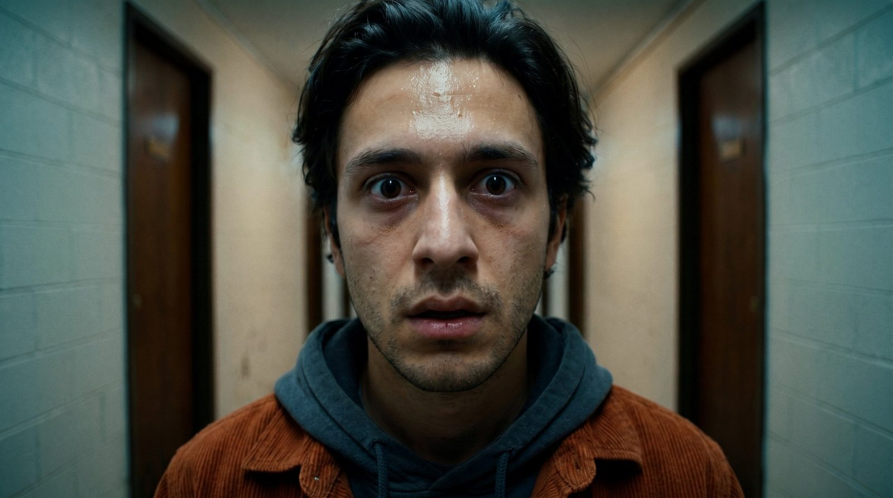
A short film
Watch the filmEvery door he opens, he’s already home.
Best with sound, full screen.
A college student keeps dreaming he opens his dorm door and finds himself already at his desk. Tonight, the dream follows him home.
A short film by David Martin · Psychological thriller · 1:47
00 · The idea
The challenge. The best-known failure of AI video is the face. Keep one character the same across a whole film and the tools start to drift. Most AI films hide that problem. OCCUPIED is built on it: a film about one face that keeps turning up where it should not be.
The constraints. Under two minutes. Photorealistic and cinematic, with no exposition. Dialogue that never depends on a perfect lip sync. One clear idea, escalated three times, with an ending that answers the opening.
My role. Story, look, cast and location design, shot design, voice direction, score direction and every call in the edit. Directed end to end.
The point. AI is a crew with strengths and weaknesses, like any crew. A director’s job is to write for the crew you have. Here the limits of the tools shaped the story, and the story is better for it.
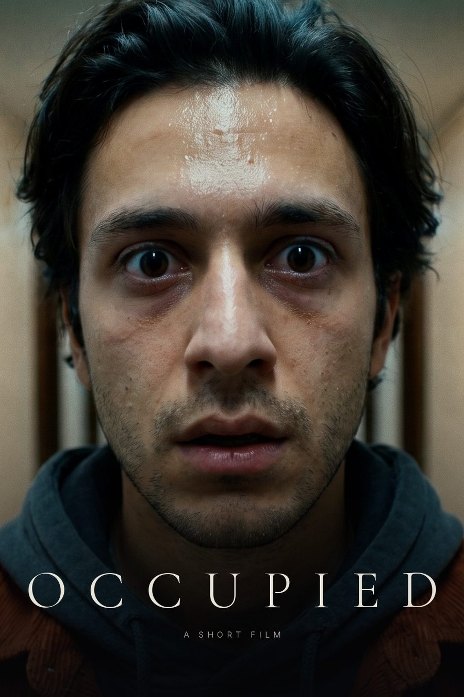
01 · The story
A dream at 3:12 AM that comes true at 4:47 PM. Doubles in the background that are easy to miss the first time and impossible to miss the second. A last frame that hands the question to the audience.

Cold open0:00
3:12 AM. The door slowly opens on a figure at the desk. He looks back. It is Eli. Hard cut to black.
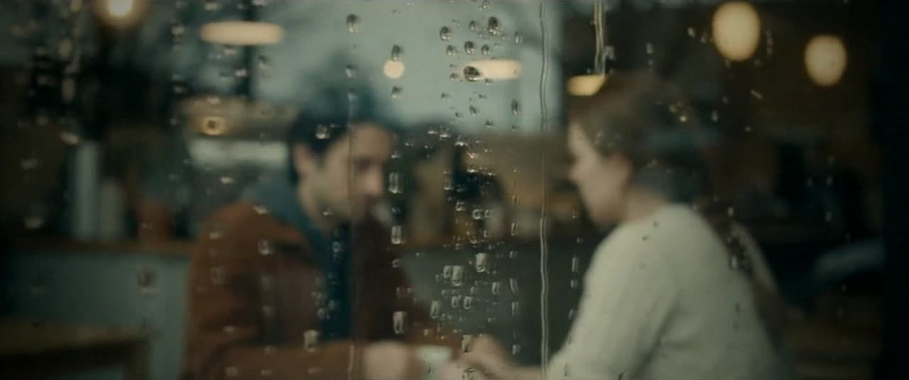
Act one0:12
Rain on the window. “He turns around… and it’s me.” Maya: “It’s just a dream.” Then, from the street: “Text me when you’re home!”
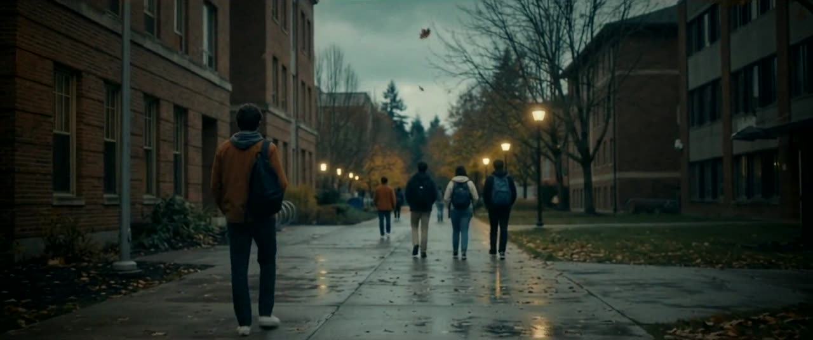
Act two0:41
The path, the crosswalk, the lobby, the stairwell. A rust jacket far down the path. Another at the bus shelter. Easy to miss, on purpose.
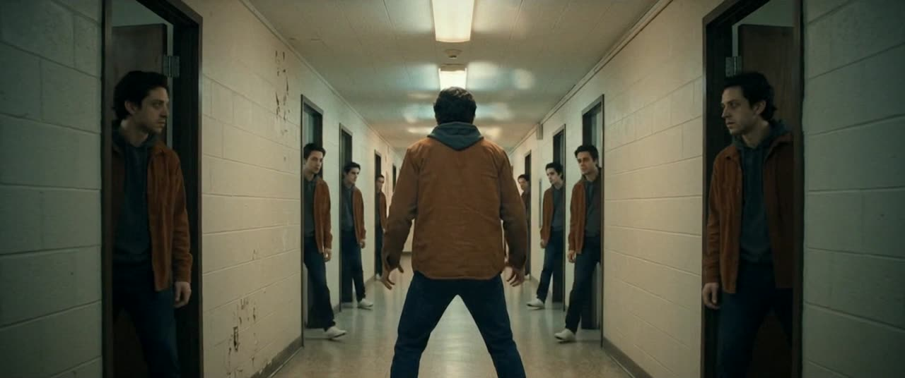
Act three1:06
4:47 PM. Light under his door, typing inside. It opens exactly as in the dream. Every door he knocks on for help is answered by himself. Lights out.
The dream, the walk, the corridor. Each beat raises the stakes on the same image.
Nobody explains anything. The audience assembles it, which is what makes them lean in.
“home yet?” on a black screen. Which Eli is going to answer?
02 · The cut
The final cut, version 13, as it plays. Picture on the left, sound and dialogue on the right.
| Time | Picture | Sound |
|---|---|---|
| 0:00 | 3:12 AM. The door opens slowly. A push-in on a figure at the desk. He looks back: Eli. | A low drone. Hard cut to black. |
| 0:09 | Title. OCCUPIED, a short film by David Martin. | A single hit, then quiet. |
| 0:12 | A cafe in the rain. Eli tells Maya the dream. | Eli: “I had the dream again.” Maya: “The same one?” Eli: “I come home, I open my door, and someone’s sitting at my desk. He turns around… and it’s me. I’m already in my room. So I run. I knock on every door on my floor… and every single one… it’s me.” |
| She covers his hand with hers. | Maya: “Don’t worry. It’s just a dream. Look at you, you’ve barely slept all week.” | |
| The street. Maya turns back as they part. | “Text me when you’re home!” | |
| 0:41 | The walk home: the path, a crosswalk, the lobby, the stairwell, the corridor. A small rust-jacket double far down the path, another at the bus shelter. | A light flickers in the stairwell with a quiet static buzz. Real footsteps in the corridor. |
| 1:06 | His door. 4:47 PM. Light and the shadow of feet underneath. | Muffled typing. |
| 1:09 | The door opens slowly. At the desk, the double turns. | One latch click. The music drops to a drone, a low hit on the turn. |
| 1:18 | Eli backs away from the doorway. | “No! No, no, no!” |
| 1:24 | Rooms 214, 216 and 218. Each door cracks open on another Eli: irritated, eating noodles, on the phone. | “Hey! Hey, I need help!!” … “Seriously?” … “One sec.” A door shuts. |
| 1:35 | Every door opens. A double in every doorway. The lights flicker, his head turns, the lights die. | Hard cut to silence. |
| 1:39 | Black. A notification: Maya, “home yet?” | A text chime. |
| 1:43 | End title. | The score’s last held note. |
03 · The look
Real skin, motivated light and restraint in the camera. Every prompt was written to the standard of a feature film, not a commercial.
Cool teal shadows, muted skin and one grade over every clip, so shots from different generations read as one film. Eli’s rust corduroy jacket is the colour to watch. Once the audience clocks it on a figure far down the path, every rust shape on screen becomes a threat.
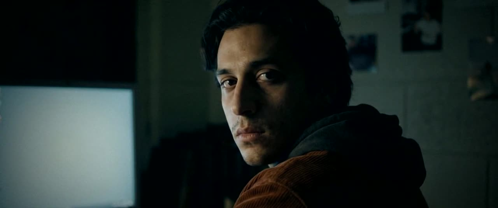
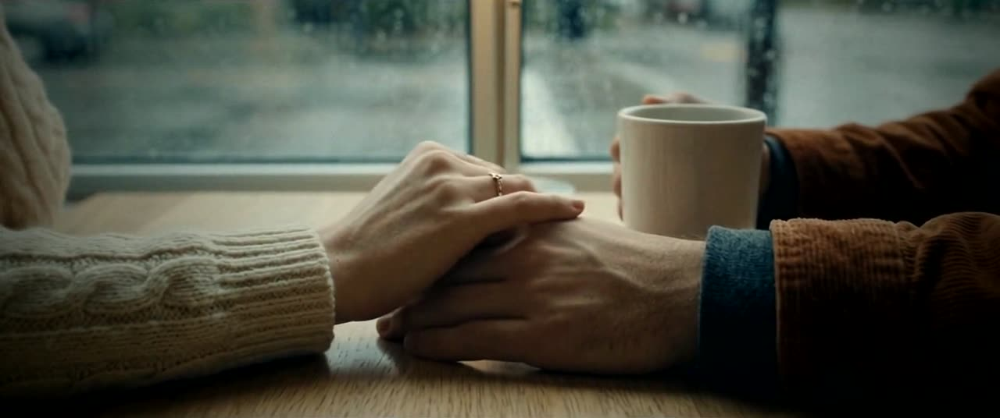
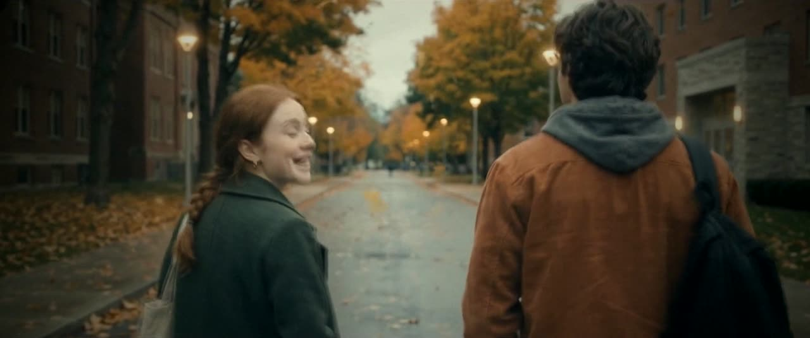
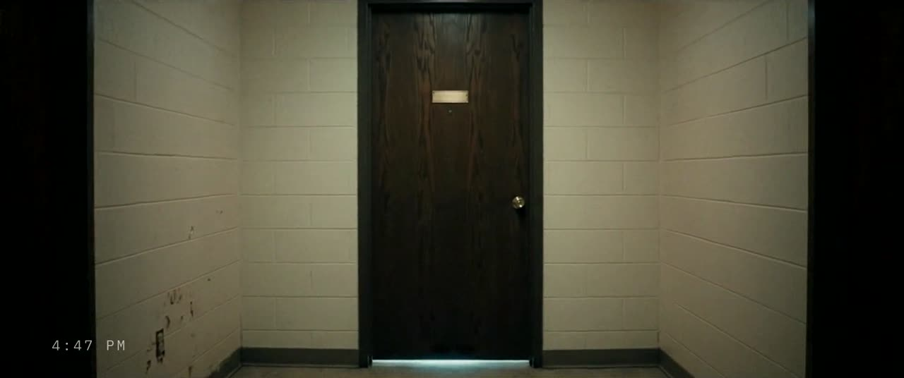
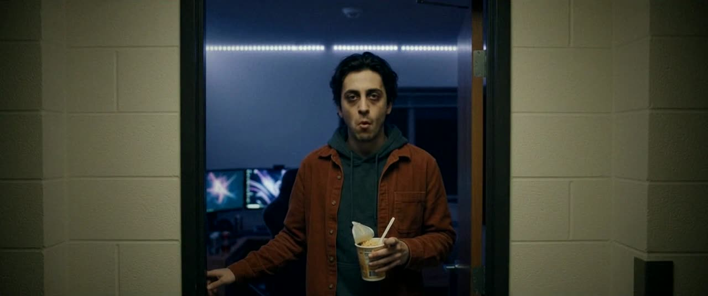
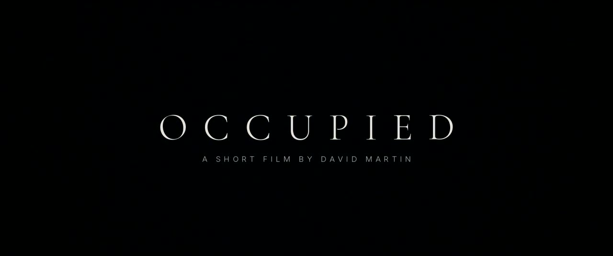
04 · Writing for the crew
The double must be easy to miss.
Eight reference images: Eli’s portrait, his full outfit and his back, Maya, and four places: the cafe, the dorm room, the second-floor corridor and the campus street. The doubles are built from Eli’s own references, because they are the same person.
Place descriptions are written once, to create the references. After that, every shot prompt points to the attached picture, “exactly as shown”, and describes only what changes. The picture, not the words, sets the room.
Every keyframe and motion prompt spells out emotion, posture, which way people face and where the camera is. Everyone on screen gets an obvious reason to do what they do.
05 · The voices
AI video does not give a reliable lip sync or the same voice twice. So every line is recorded separately with one locked voice per character, and most of them play over hands, through glass or over a back. Where a mouth is visible, the line is lined up with the clip’s own speech.
For Maya’s line in the street, the model was prompted to say the exact words. That second was slowed to 1.25× and her recorded line sped up 1.3× until the two met.
The doubles speak in Eli’s voice. That sameness is the scare.
Every voice gets the acoustics of its room: the cafe, the street, the dorm, the corridor. Nothing sounds like voiceover laid on top of a picture.
I had the dream again.Eli · Cafe
The same one?Maya · Cafe
He turns around… and it’s me.Eli · Cafe
Don’t worry. It’s just a dream.Maya · Over hands
Text me when you’re home!Maya · Synced
No! No, no, no!Eli · Soft focus
Hey! Hey, I need help!!Eli · Over a door
Seriously?Double · Room 214
One sec.Double · Room 218
06 · Score and sound
One original score, cut to picture and ducked about 10 dB under dialogue. At the reveal it drops to a drone, with a low hit as the double turns. At lights out it cuts to nothing. Then a text chime, and the end title over the score’s last held note.
Measured from the finished film, every half second. Integrated loudness −16.3 LUFS.
Footsteps come from the clips’ own audio, which beat synthetic ones. Knocks are a solid thud with a short decay, never hollow. Each door gets one latch click and no creak: synthetic creaks read as a horn. The stairwell light flickers with a quiet static buzz.
Around −16 LUFS integrated with true peak held at −1.5 dB, the level online platforms expect. Nothing is ever laid over a face or a double.
07 · The pipeline
| Stage | Tool |
|---|---|
| References, keyframes and motion | Google Flow, Omni Flash |
| Voices | Speechify |
| Score | Suno Pro |
| Story development, shot plan, prompts, edit, grade, sound design, mix and overlays | Claude (Anthropic) |
The story began as my skeleton: a recurring dream, a walk home, a door. Thirteen cuts later it was finished in three days. Every version was watched, noted and kept.
Review caught what the tools missed. In version 12, motion interpolation left a white sliver on the edge of a door at 1:12; the fix was frame blending. A generated poster on a dorm wall read like a real game title; it was replaced with an invented one. Every sign and poster was checked for real brands.
The tools generated the material. Every decision about what stayed, what moved and what got cut was made by a director.

Writer and director
Creative Director · North Vancouver, BC
I wrote and directed OCCUPIED: the story, the look, every shot and every line. It is pure storytelling. No product, nothing to sell, only the feeling in the last frame.
I have spent 15+ years across video, content, brand, technology and business. In 2006 I founded DJC Media, an independent studio where I direct every discipline in-house, with a quarter billion views directed.
AI is my production crew. The idea, the standards and the final cut stay with me.